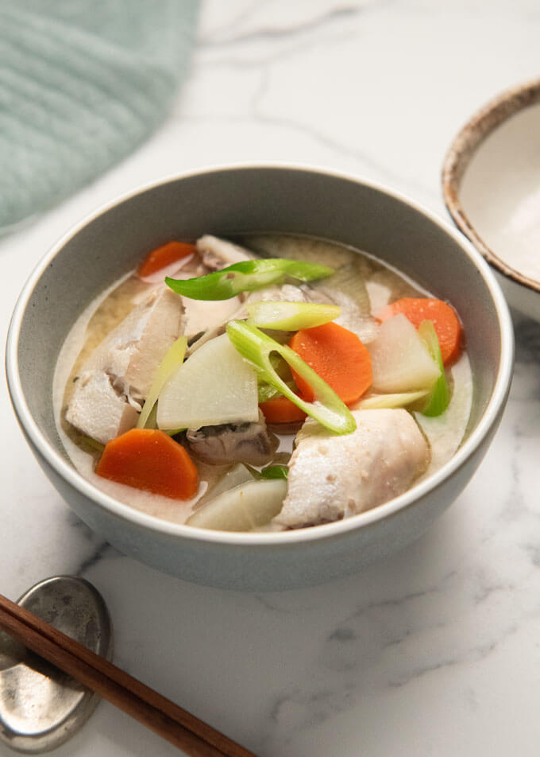
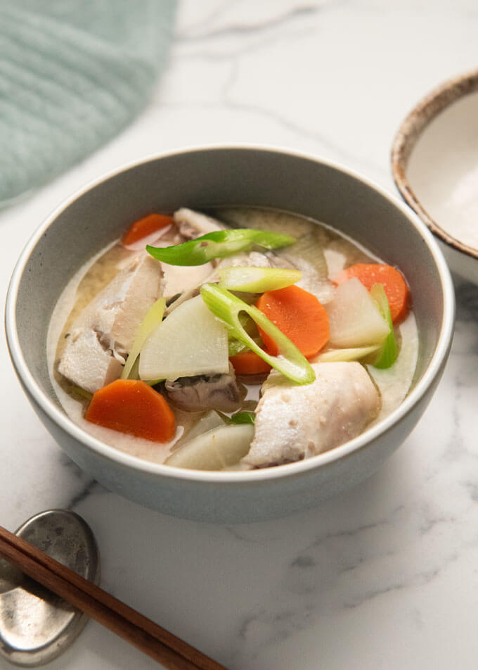

Join us every weekday from 3 PM – 6 PM for Happy Hour! Enjoy a selection of drinks and appetizers at special prices.
Lychee Martini – Vodka, lychee puree, and a splash of lime juice - 11.00
Pandan Gin Fizz – Pandan-infused gin, lime, soda, and egg white for a frothy finish - 12.00
Pineapple Shiso Smash – Fresh pineapple, muddled shiso leaves, rum, and a hint of ginger syrup - 12.00
Tokyo Mule – Vodka, ginger beer, lime, and yuzu - 11.00

Asahi – Sapporo – Singha – Tsingtao - 6.00
Hakkaisan Junmai (Niigata) – Crisp and dry with subtle notes of rice and a clean finish - 9.00
Shichida Junmai (Saga) – Full-bodied with rich umami flavor and mild acidity - 10.00
Kikusui Junmai (Niigata) – Light and refreshing with subtle notes of melon and citrus - 9.00
Dassai 50 Junmai Ginjo (Yamaguchi) – Delicate and fragrant with hints of tropical fruit and peach - 12.00
Suigei Tokubetsu Junmai Ginjo (Kochi) – Dry and clean, with bright acidity and a hint of grapefruit - 11.00
Tedorigawa Junmai Ginjo "Lady Luck" (Ishikawa) – Bright and refreshing with aromas of white flowers and green apples - 12.00
Kubota Manju Daiginjo (Niigata) – Elegant and silky with floral aromas and refined sweetness - 16.00
Katsuyama Ken Daiginjo (Miyagi) – Rich and velvety with fruity notes of ripe pear and melon - 15.00
Tatsuriki "Chotokusen" Daiginjo (Hyogo) – Luxurious and complex with subtle notes of lychee and pear - 16.00
Hakutsuru Sayuri Nigori (Hyogo) – Creamy and sweet with notes of coconut and vanilla - 8.00
Shiro Sasa Nigori (Akita) – Thick and rich with bold sweetness and a hint of banana - 9.00
Dassai Sparkling 50 (Yamaguchi) – Effervescent and refreshing with crisp finish and fruity notes - 14.00
Mio Sparkling Sake (Hyogo) – Lightly sparkling with sweet and fruity profile - 12.00
Eikun "The Sleeping Beauty" Junmai Daiginjo (Kyoto) – Delicate floral aroma and soft, silky texture - 14.00
Isojiman Tokubetsu Junmai (Shizuoka) – Fresh and crisp with mineral-driven finish - 12.00
 
